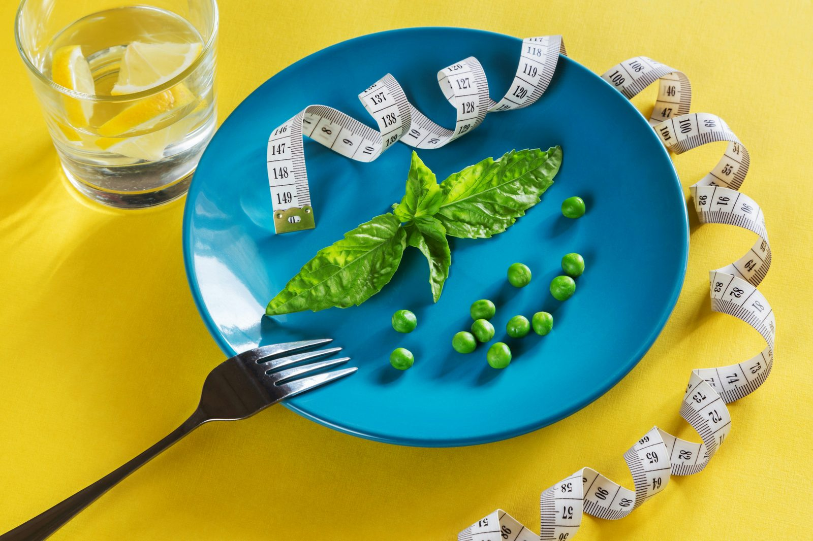

Both intermittent fasting and calorie counting are, at their core, tools for creating a calorie deficit — they just go about it in completely different ways. One restricts when you eat; the other restricts how much. Understanding that they share the same underlying mechanism, rather than competing on some unique metabolic advantage, is the key to figuring out which one actually fits your life.
The shared mechanism: they both create a deficit
Weight loss ultimately requires consuming fewer calories than you burn, regardless of the method used to get there. Intermittent fasting restricts your eating to a specific window (commonly 16:8, 18:6, or OMAD), which for many people naturally results in eating less simply because there are fewer opportunities to eat. Calorie counting instead tracks exact intake across however many meals you choose, giving direct control over the number rather than relying on a restricted window to produce the same effect indirectly.
Where intermittent fasting has an edge
Fasting's biggest practical advantage is simplicity — there's no tracking app, no weighing food, no logging. For people who find calorie counting mentally exhausting or who tend to obsess over numbers, a fixed eating window removes a whole layer of daily decision-making. Some people also report reduced hunger once adapted to a fasting schedule, since the body adjusts hunger hormone patterns to the new routine over a few weeks.
Where calorie counting has an edge
Calorie counting gives direct, granular control — you know exactly what you're consuming rather than hoping a shorter eating window naturally produces a deficit. This matters most for people with specific performance or physique goals, where hitting a precise calorie and macro target consistently matters more than simply "eating less." It also works for anyone whose schedule doesn't suit a fixed fasting window — shift workers, people with early morning training, or anyone who eats socially at unpredictable times.
The adherence problem: does fasting actually reduce total intake?
This is the central practical question, and the honest answer is: it depends on the person. For many people, a shorter eating window does lead to naturally eating less, simply through fewer opportunities and reduced overall appetite. But it's not guaranteed — some people compensate by eating more food during the eating window than they would have across a full day, effectively cancelling out the benefit. Fasting isn't a magic deficit generator; it's a behavioural strategy that works well for people whose eating patterns respond well to a restricted window, and less well for people who don't.
What the research actually shows
Studies directly comparing intermittent fasting against traditional calorie restriction at matched total calorie intake generally find similar weight loss outcomes between the two approaches. This is a genuinely important finding: it suggests that fasting's effectiveness comes from calorie restriction (achieved indirectly through a smaller eating window), not from some unique metabolic or hormonal advantage unrelated to calories. In other words, neither approach is inherently superior — the real-world difference comes down to which one you can sustain consistently.
Combining both approaches
These aren't mutually exclusive. Many people use a fasting window as a simple structural tool, then track calories within that window for more precision — getting the simplicity benefit of a restricted eating period plus the accuracy benefit of knowing exactly what they're consuming. This hybrid approach is common among people with specific physique or performance goals who still want the lifestyle simplicity fasting provides.
Which one should you choose?
Consider your own relationship with food and structure. If you find open-ended eating windows lead to grazing and you do better with clear rules, fasting's structure may suit you well. If you have specific macro or calorie targets you need to hit precisely — for muscle building, athletic performance, or medical reasons — calorie counting gives you the control fasting alone doesn't provide. If you're unsure, there's no harm in trying one for a few weeks, observing how it affects your hunger, energy, and adherence, and adjusting from there.
Frequently asked questions
Can I combine intermittent fasting with calorie counting?
Yes, and many people do — using a fasting window to naturally limit eating opportunities while still tracking totals within that window for more precision and control over macros.
Is fasting a shortcut that avoids counting calories?
Not exactly — it's easier to accidentally stay in a deficit with fewer eating opportunities, but it doesn't guarantee one. Overeating during the eating window can still result in maintenance calories or even a surplus.
Which is better for people who struggle with hunger?
This is highly individual — some people find fasting reduces hunger once adapted over a few weeks, while others feel hungrier on a restricted schedule and do better spreading intake across the day with calorie counting instead.
Does intermittent fasting have a metabolic advantage over calorie counting?
Research directly comparing the two at matched calorie intake generally finds similar weight loss outcomes, suggesting the main practical difference is adherence and lifestyle fit rather than a unique metabolic edge.